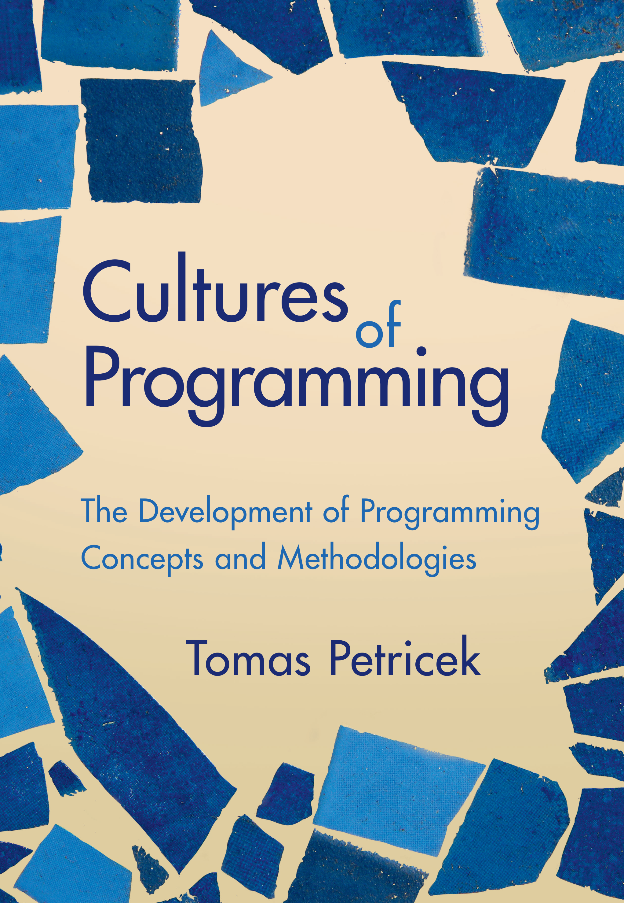

History of programming
and why it matters today
Cultures of Programming — Part 1
Tomas Petricek, Charles University, Prague


The history of programming, told through the lens of interactions between five cultures of programming.
Cultures cooperate, exchange ideas, disagree, struggle for control.
What went wrong?
Software update activated unused and wrong code
Reflections on the issue
- Engineering blogs
- Formal verification talks
- SEC commission analysis
Reflections on the Knight glitch
Mathematical culture
Software not formally verified correct!
Engineering culture
Poor testing and engineering practice
Managerial culture
Incorrect implementation of oversight processes
Managerial
Hacker
Humanistic
Mathematical
Engineering
Reflections harder to trace
Hacker culture
System continued running
for 45 minutes! It should
have been turned off sooner!
Humanistic culture
Threats of high-frequency trading
Automation reorganizes the human
Clashes
What is the problem of programming

Hacker origins
“Programming in the early 1950s was a black art,
a private arcane matter involving only a programmer,
a problem, a computer, ... and a primitive assembly program.”
John Backus (1976)

Managerial problem
“With SAGE, we were faced with programs too large for one person to grasp entirely and also with the need to hire and train large numbers of people to become programmers... We were faced with organizing and managing a whole new art.”
Herbert Benington (1956)

Mathematical science
“Program testing can be used to show the presence of bugs, but never to show their absence!” Rather than verifying programs through their testing, we should prove them correct.
Edsger Dijkstra (1969)

Software engineering
“The phrase software engineering was deliberately chosen as provocative... We undoubtedly produce software by backward techniques.”
The black art of programming has to make way for the science of software engineering!
NATO Conference on Software Engineering (1968)

Humanistic problem
“Alan Kay is more interested in us kids. He repudiates the manipulative arrogance .. and serves the dictum of Seymour Papert, Should the computer program the kid or should the kid program the computer?”
Brand, Rolling Stone (1972)
Clashes
Correctness, programming education
Program errors
Glitch art uses errors for critical & aesthetic goals
Different cultures see errors differently!
What is error-free?
How to create it?
Program errors
What program is correct?
-
Managerial and engineering cultures
Program does what the customer needs -
Mathematical culture
Matches a given formal specification -
Humanistic culture
Programs shape world, question is ill-defined

Programming education
Floor turtle programmed in the LOGO language using a button box
How to educate good programmers?
Fundamental concepts!
Programming education
-
Engineering and mathematical origins
Numerical analysis, logic circuits, programming -
Growth of the mathematical culture
Abstract programming concepts and algorithms -
Hacker culture disagrees
Programming as a practical skill, taught by doing -
Broader humanistic concerns
Teach "powerful ideas," not programming
History
Cultures of programming view
- Cultures emerge early in the history
- Unique values, views, methods, aesthetics
- Stable over history of programming
- Not always shared communities
- Inherently pluralistic discipline?
Cultures of Programming
Home Continue to Part 2